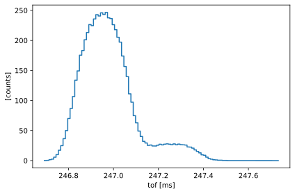
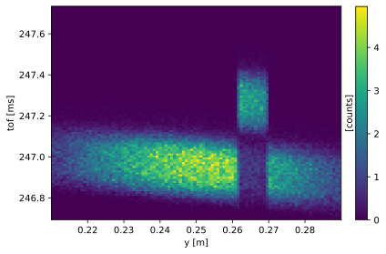
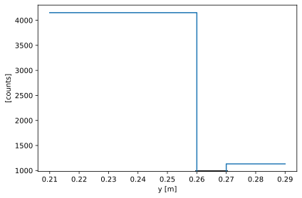
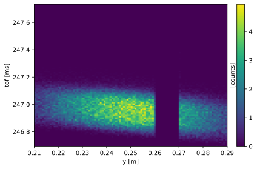
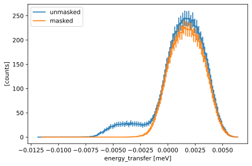
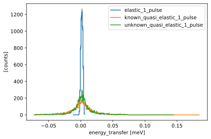
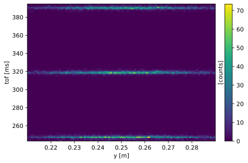
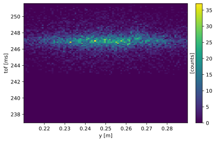
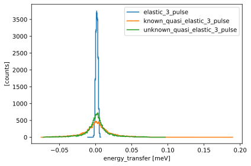
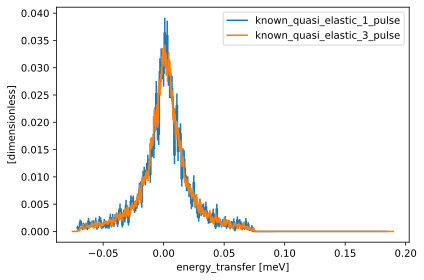

QENS data reduction#
This notebook will guide you through the data reduction for the QENS experiment that you simulated with McStas yesterday.
The following is a basic outline of what this notebook will cover:
Loading the NeXus files that contain the data
Inspect/visualize the data contents
How to convert the raw
time-of-flightcoordinate to something more useful (\(\Delta E\))Write the results to file
Process more than one pulse
import numpy as np
import scipp as sc
import plopp as pp
import scippneutron as scn
import utils
Single pulse#
Load raw data#
Begin by loading and investigating a single file. In this example, we use the elastic sample, but any file with a single pulse will do.
folder = "../3-mcstas/QENS_elastic_1_pulse"
events = utils.load_qens(folder)
The first way to inspect the data is to view the HTML representation of the loaded object.
Try to explore what is inside the data, and familiarize yourself with the different sections (Dimensions, Coordinates, Data).
events
- event: 375091
- analyzer_angle()float64rad0.04157061594422062
Values:
array(0.04157062) - analyzer_dspacing()float64Å3.135
Values:
array(3.135) - analyzer_position()vector3m[1.5 0. 2.59807621]
Values:
array([1.5 , 0. , 2.59807621]) - id(event)float64550.0, 550.0, ..., 142.0, 187.0
Values:
array([550., 550., 544., ..., 325., 142., 187.]) - n(event)float64-1.0, 0.0, ..., 1.875e+05, 1.875e+05
Values:
array([-1.00000e+00, 0.00000e+00, 1.00000e+00, ..., 1.87471e+05, 1.87472e+05, 1.87473e+05]) - position(event)vector3m[0. 0.28342382 0. ], [0. 0.28329795 0. ], ..., [0. 0.22882423 0. ], [0. 0.2349071 0. ]
Values:
array([[0. , 0.28342382, 0. ], [0. , 0.28329795, 0. ], [0. , 0.28266378, 0. ], ..., [0. , 0.25335127, 0. ], [0. , 0.22882423, 0. ], [0. , 0.2349071 , 0. ]]) - sample_position()vector3m[0. 0. 0.]
Values:
array([0., 0., 0.]) - source_position()vector3m[ 0. 0. -150.]
Values:
array([ 0., 0., -150.]) - tof(event)float64ms246.972, 246.973, ..., 247.104, 246.899
Values:
array([246.97202982, 246.97251284, 246.76219662, ..., 247.05203676, 247.10391631, 246.8985515 ]) - x(event)float64m0.0, 0.0, ..., 0.0, 0.0
Values:
array([0., 0., 0., ..., 0., 0., 0.]) - y(event)float64m0.283, 0.283, ..., 0.229, 0.235
Values:
array([0.28342382, 0.28329795, 0.28266378, ..., 0.25335127, 0.22882423, 0.2349071 ])
- (event)float64counts0.032, 8.424e-07, ..., 1.194e-08, 0.067
Values:
array([3.16581710e-02, 8.42427872e-07, 2.82382147e-18, ..., 6.10924965e-02, 1.19383024e-08, 6.67673665e-02])
Visualize the raw data#
Here is a histogram of the raw data in tof:
events.hist(tof=100).plot()

It is more enlightening to look at a 2D histogram in tof and y as this shows a defect of the detector for a certain y-range:
events.hist(tof=100, y=100).plot()

Exercise 1: mask bad region#
We need to handle the events that are affected by the detector defect. The simplest way of doing so it to mask the affected region in y. We will do so by binning in y and applying a y-dependent mask to the data array.
Steps:
Define bin-edges in the y-dimension that cover the entire range of the data. There should be three bins which cover the y-range below the broken region, the broken region, and the the range above the broken region, respectively. So you should end up with a length-4 array of bin-edges.
Define another array for the mask which should have the values
[False, True, False]. So it masks the middle bin but not the others.Apply the mask by binning the events using the edges you defined and inserting the mask into the binned array’s masks.
Hints:
Use
sc.arrayto create arrays for the bin-edges and the mask.Bin the data using
binned_for_mask = events.bin(...),Apply the mask by inserting it into
binned_for_mask.maskswhich behaves like adict.
Solution:
Show code cell content
y = events.coords["y"]
mask_regions = sc.array(
dims=["y"],
values=[0.21, 0.26, 0.27, 0.29],
unit=y.unit,
)
binned_for_mask = events.bin(y=mask_regions)
mask = sc.array(dims=["y"], values=[False, True, False])
binned_for_mask.masks["bad_timing"] = mask
binned_for_mask
- y: 3
- analyzer_angle()float64rad0.04157061594422062
Values:
array(0.04157062) - analyzer_dspacing()float64Å3.135
Values:
array(3.135) - analyzer_position()vector3m[1.5 0. 2.59807621]
Values:
array([1.5 , 0. , 2.59807621]) - sample_position()vector3m[0. 0. 0.]
Values:
array([0., 0., 0.]) - source_position()vector3m[ 0. 0. -150.]
Values:
array([ 0., 0., -150.]) - y(y [bin-edge])float64m0.21, 0.26, 0.27, 0.29
Values:
array([0.21, 0.26, 0.27, 0.29])
- (y)DataArrayViewbinned data [len=245305, len=57399, len=72387]
dim='event', content=DataArray( dims=(event: 375091), data=float64[counts], coords={'x':float64[m], 'y':float64[m], 'n':float64, 'id':float64, 'position':vector3[m], 'tof':float64[ms]})
- bad_timing(y)boolFalse, True, False
Values:
array([False, True, False])
We plot the data array with the mask below. The black band in the middle bin indicates the mask:
binned_for_mask.hist().plot()

When making the same 2D histogram as before, the masked events will be dropped and the result is a histogram with a gap:
binned_for_mask.hist(tof=100, y=100).plot()

Transform to energy transfer#
The next step is to compute the measured energy transfer in the sample from time-of-flight and the other coordinates of our data. We use scipp.transform_coords for this purpose.
Scippneutron provides some pre-defined functions for coordinate transformations, see the documentation for a list. In particular, it provides scippneutron.conversion.tof.energy_transfer_indirect_from_tof which computes the energy transfer for an indirect-geometry spectrometer:
where \(m_n\) is the neutron mass, \(L_1\) is the primary flight path length (from source to sample), and \(L_2\) is the secondary flight path length (from sample to detector). The intermediate variable \(t_0\) is the the time of flight for the secondary path such that \((t - t_0)\) is the arrival time at the sample.
While Scippneutron provides most of what we need, we have to define some custom components for our specific instrument. We require functions to compute
L2, the path length of the scattered neutron. The default function in Scippneutron assumes a straight path but here, we need to take the reflection from the analyzer crystal into account: \(L_2 = |\overline{\mathsf{sample},\mathsf{analyzer}}| + |\overline{\mathsf{analyser},\mathsf{detector}}|\)
final_wavelength, the neutron wavelength that the analyzer selects for. We compute it from the known \(d\)-spacing of the analyzer \(d_a\) and the scattering angle off the analyzer \(\theta_a\): \(\mathsf{final\_wavelength} = 2 d_a \sin{\theta_a}\)
final_energy, the energy of the neutrons that hit the detector (more below): \(\mathsf{final\_energy} = \displaystyle\frac{m_n}{2} v_f^2\)
The first two are implemented below. They use the positions and analyzer parameters in the input data.
def backscattered_l2(position, sample_position, analyzer_position):
"""
Compute the length of the secondary flight path for backscattering off an analyzer.
"""
return sc.norm(position - analyzer_position) + sc.norm(
analyzer_position - sample_position
)
def wavelength_from_analyzer(analyzer_dspacing, analyzer_angle):
"""
Compute the neutron wavelength after scattering from the analyzer's d-spacing.
Assuming Bragg scattering in the analyzer, the wavelength is
wavelength = 2 * d * sin(theta)
Where
d is the analyzer's d-spacing,
theta is the scattering angle or equivalently, the tilt of the analyzer
w.r.t. to the sample-analyzer axis.
"""
# 2*theta is the angle between transmitted and scattered beam.
return (
2
* analyzer_dspacing
* sc.sin(sc.scalar(np.pi / 2, unit="rad") - analyzer_angle.to(unit="rad"))
)
We can start assembling the graph to compute the energy transfer:
from scippneutron.conversion.graph.beamline import beamline
from scippneutron.conversion.tof import energy_transfer_indirect_from_tof
graph = {
**beamline(scatter=True),
"energy_transfer": energy_transfer_indirect_from_tof,
# Replace L2 with our own implementation.
"L2": backscattered_l2,
# Insert a new function for the wavelength.
"final_wavelength": wavelength_from_analyzer,
}
# Optional: remove unused functions in order to clean up the image below.
del graph["two_theta"]
del graph["scattered_beam"]
del graph["Ltotal"]
sc.show_graph(graph, simplified=True)

Exercise 2: Compute energy transfer#
We can see that final_energy is not yet linked to final_wavelength in the graph.
Your task is to implement a function def final_energy(final_wavelength) to fill in the gap.
The energy is given by
where \(v_f\) is the speed of the scattered neutron and \(m_n\) is the neutron mass.
Exercise 2.1: Finish the graph#
Steps:
Define a new function that computes the final energy given the equations above.
Tip: Ensure that the result has unit
meV.Tip: Use sc.constants to get values for \(\hbar\) (or \(h\)) and \(m_n\).
Insert the new function into the graph.
Solution:
Show code cell content
def final_energy(final_wavelength):
"""
Compute the neutron energy after scattering.
Uses
final_energy = mn / 2 * final_speed**2
final_speed = 2 * pi * hbar / mn / final_wavelength
Where
mn is the neutron mass,
final_wavelength is the wavelength after scattering,
final_speed is the speed after scattering.
"""
return sc.to_unit(
sc.constants.h**2 / 2 / sc.constants.neutron_mass / (final_wavelength**2),
"meV",
)
graph["final_energy"] = final_energy
sc.show_graph(graph, simplified=True)

Exercise 2.2: Compute energy transfer with the masked data#
Use binned_for_mask.transform_coords (or what ever name you used for the masked array) to compute "energy_transfer".
Show code cell content
in_energy_transfer = binned_for_mask.transform_coords("energy_transfer", graph=graph)
in_energy_transfer
- y: 3
- L1()float64m150.0
Values:
array(150.) - analyzer_angle()float64rad0.04157061594422062
Values:
array(0.04157062) - analyzer_dspacing()float64Å3.135
Values:
array(3.135) - analyzer_position()vector3m[1.5 0. 2.59807621]
Values:
array([1.5 , 0. , 2.59807621]) - final_energy()float64meV2.0844491390262334
Values:
array(2.08444914) - final_wavelength()float64Å6.264583136143423
Values:
array(6.26458314) - incident_beam()vector3m[ 0. 0. 150.]
Values:
array([ 0., 0., 150.]) - sample_position()vector3m[0. 0. 0.]
Values:
array([0., 0., 0.]) - source_position()vector3m[ 0. 0. -150.]
Values:
array([ 0., 0., -150.]) - y(y [bin-edge])float64m0.21, 0.26, 0.27, 0.29
Values:
array([0.21, 0.26, 0.27, 0.29])
- (y)DataArrayViewbinned data [len=245305, len=57399, len=72387]
dim='event', content=DataArray( dims=(event: 375091), data=float64[counts], coords={'x':float64[m], 'y':float64[m], 'n':float64, 'id':float64, 'position':vector3[m], 'tof':float64[ms], 'L2':float64[m], 'energy_transfer':float64[meV]})
- bad_timing(y)boolFalse, True, False
Values:
array([False, True, False])
Exercise 2.3: Compute energy transfer for unmasked data#
For comparison, also compute energy transfer with the original data without a mask.
Solution:
Show code cell content
in_energy_transfer_unmasked = events.transform_coords("energy_transfer", graph=graph)
Now we can plot the masked and unmasked data to compare them.
As always, we first need to histogram them.
(We use in_energy_transfer.bins.concat() to undo the binning from exercise 1.
Without it, we would get a 2D histogram in y and energy_transfer.)
masked_hist = in_energy_transfer.bins.concat().hist(energy_transfer=100)
unmasked_hist = in_energy_transfer_unmasked.hist(energy_transfer=100)
The histogrammed data currently has no standard deviations on the counts. This needs to be added after we have performed the histogramming operation.
When dealing with neutron events, we assume the data has a Poisson distribution. This means that the variance in a bin is equal to the counts in that bin (the standard deviation is then \(\sigma = \sqrt{\mathsf{counts}}\)).
We provide a helper function that will add Poisson variances to any given input:
utils.add_variances(masked_hist)
utils.add_variances(unmasked_hist)
And finally, we can plot the data:
pp.plot(
{
"unmasked": unmasked_hist,
"masked": masked_hist,
}
)

Exercise 3: Compute energy transfer for all samples#
We have only looked at one of our three samples so far. Now, we repeat the same procedure for the remaining two.
Your task is to load the other samples, mask the broken detector region, and compute energy_transfer. (You don’t need to repeat the calculation for the unmasked data. And for now, only use the “1_pulse” files.)
Hints:
Write a function that encapsulates the whole procedure.
You can reuse the mask bin-edges and the mask itself.
Store the results for all samples in a
dict. This way, you can easily plot it usingpp.plot.Use a scalar variable with a unit, e.g.
sc.scalar(0.01, unit='meV'), for the histogramming to get a constant bin width.
Solution:
def process_sample(raw_events):
binned_for_mask = raw_events.bin(y=mask_regions)
binned_for_mask.masks["bad_timing"] = mask
in_energy_transfer = binned_for_mask.transform_coords(
"energy_transfer", graph=graph
)
hist = in_energy_transfer.bins.concat().hist(energy_transfer=0.001 * sc.Unit('meV'))
utils.add_variances(hist)
return hist
folders = (
"../3-mcstas/QENS_elastic_1_pulse",
"../3-mcstas/QENS_known_quasi_elastic_1_pulse",
"../3-mcstas/QENS_unknown_quasi_elastic_1_pulse",
)
results = {}
for folder in folders:
events = utils.load_qens(folder)
# Remove the file path prefix from the folder name
data_name = folder.replace("../3-mcstas/QENS_", "")
results[data_name] = process_sample(events)
Show code cell content
pp.plot(results)

Save result to disk#
Finally, we need to save our results to disk so that the reduced data can be forwarded to the next step in the pipeline (data analysis). We will use a simple text file for this.
This code assumes that you stored your histograms in a dict called results with keys of the form "elastic_1_pulse", etc.
If this is not the case, you need to modify the code below.
for name, result in results.items():
# The simple file format does not support bin-edge coordinates.
# So we convert to bin-centers first.
data = result.copy()
data.coords["energy_transfer"] = sc.midpoints(data.coords["energy_transfer"])
scn.io.save_xye(f"qens_energy_transfer_{name}.dat", data)
Three pulses#
Load raw data#
We now want to repeat the reduction, but using more than a single pulse to improve our statistics.
We begin by loading a run with 3 pulses.
folder = "../3-mcstas/QENS_known_quasi_elastic_3_pulse"
events_3_pulse = utils.load_qens(folder)
events_3_pulse
- event: 31712
- analyzer_angle()float64rad0.04157061594422062
Values:
array(0.04157062) - analyzer_dspacing()float64Å3.135
Values:
array(3.135) - analyzer_position()vector3m[1.5 0. 2.59807621]
Values:
array([1.5 , 0. , 2.59807621]) - id(event)float64445.0, 391.0, ..., 97.0, 388.0
Values:
array([445., 391., 556., ..., 139., 97., 388.]) - n(event)float64-1.0, 0.0, ..., 1.591e+04, 1.591e+04
Values:
array([-1.0000e+00, 0.0000e+00, 1.0000e+00, ..., 1.5912e+04, 1.5913e+04, 1.5914e+04]) - position(event)vector3m[0. 0.26924235 0. ], [0. 0.26238711 0. ], ..., [0. 0.22300114 0. ], [0. 0.26188079 0. ]
Values:
array([[0. , 0.26924235, 0. ], [0. , 0.26238711, 0. ], [0. , 0.28424389, 0. ], ..., [0. , 0.22879937, 0. ], [0. , 0.22300114, 0. ], [0. , 0.26188079, 0. ]]) - sample_position()vector3m[0. 0. 0.]
Values:
array([0., 0., 0.]) - source_position()vector3m[ 0. 0. -150.]
Values:
array([ 0., 0., -150.]) - tof(event)float64ms245.347, 247.562, ..., 389.522, 246.230
Values:
array([245.34731187, 247.56225747, 322.27281657, ..., 247.26431065, 389.52246397, 246.22969144]) - x(event)float64m0.0, 0.0, ..., 0.0, 0.0
Values:
array([0., 0., 0., ..., 0., 0., 0.]) - y(event)float64m0.269, 0.262, ..., 0.223, 0.262
Values:
array([0.26924235, 0.26238711, 0.28424389, ..., 0.22879937, 0.22300114, 0.26188079])
- (event)float64counts1.885e-16, 1.363, ..., 1.487, 2.104
Values:
array([1.88450719e-16, 1.36306934e+00, 1.81766554e-14, ..., 2.00070503e+00, 1.48729109e+00, 2.10391026e+00])
events_3_pulse.hist(tof=100, y=100).plot()

We can see that we have 3 distinct pulses (3 horizontal bands of events).
In order to combine the data from the 3 pulses (also known as ‘pulse folding’), we need to compute a neutron time-of-flight relative to the start of each pulse, instead of absolute time.
Exercise 4: Fold the pulses#
You are provided with a function that will perform the folding correctly, assuming you supply it the correct inputs.
?utils.fold_pulses
Steps:
Make an array of pulse offsets. That is, a length-3 array in dimension
tofand with unit"ms", starting at 0, using 14 pulses per second.Make evenly-spaced pulse-edges that cover the entire
tof-range. This should be a length-4 array.Call
utils.fold_pulseswith your arrays and the loaded events.Histogram in
tofandyand plot like we have done above to see if the pulses are properly folded.
Show code cell content
pulse_offsets = sc.arange("tof", 3.0) * sc.scalar(1.0 / 14.0, unit="s").to(unit="ms")
tmin = 237.
tmax = 400.
pulse_edges = sc.linspace("tof", tmin, tmax, 4, unit="ms")
folded = utils.fold_pulses(events_3_pulse, pulse_edges, pulse_offsets)
folded.hist(tof=100, y=100).plot()

Exercise 5: Compute energy transfer for folded data.#
Load the other two files with “3_pulse” runs and fold them in the same way.
Then, apply the mask and compute energy_transfer in the same way as for the “1_pulse” data.
If you made a function for the latter, you can reuse it here.
Show code cell content
folders = (
"../3-mcstas/QENS_elastic_3_pulse",
"../3-mcstas/QENS_known_quasi_elastic_3_pulse",
"../3-mcstas/QENS_unknown_quasi_elastic_3_pulse",
)
results_3_pulse = {}
for folder in folders:
events = utils.load_qens(folder)
folded = utils.fold_pulses(events, pulse_edges, pulse_offsets)
# Remove the file path prefix from the folder name
data_name = folder.replace("../3-mcstas/QENS_", "")
results_3_pulse[data_name] = process_sample(folded)
pp.plot(results_3_pulse)

We can compare the “1_pulse” and “3_pulse” runs by making a plot. But since we are using total event counts, we need to normalize the histograms before we can compare them.
The code below assumes that your histograms are stored in dicts called results (for “1_pulse”) and results_3_pulse.
You may need to adapt the code to work with your way of storing the results.
n1 = results["known_quasi_elastic_1_pulse"]
n1 = n1 / sc.values(n1.sum())
n3 = results_3_pulse["known_quasi_elastic_3_pulse"]
n3 = n3 / sc.values(n3.sum())
pp.plot({"known_quasi_elastic_1_pulse": n1, "known_quasi_elastic_3_pulse": n3})

Save results to disk#
Again, we save the final results to a text file.
for name, result in results_3_pulse.items():
# The simple file format does not support bin-edge coordinates.
# So we convert to bin-centers first.
data = result.copy()
data.coords["energy_transfer"] = sc.midpoints(data.coords["energy_transfer"])
scn.io.save_xye(f"qens_energy_transfer_{name}.dat", data)